Tea Project — 禪 (Zen)
An oriental tea brand built around the feeling of 禪 (Zen) — peaceful, far-reaching, contemplative. Calligraphy painting and bamboo materials carry the brand from logo to tea-bag to canister.
Overview
This project is a series of tea products built around oriental tea culture — designed to express the peaceful, far-reaching feeling that the East associates with the ritual of drinking tea: 禪 (Zen). The visual language combines Chinese calligraphy painting with bamboo as a primary material.
The graphic logo takes the form of Zen stones, outlined with three calligraphic brush strokes. The English wordmark is a sans-serif base with subtle serif embellishments to evoke an oriental classical style. The Chinese mark is set as a calligraphy stamp, echoing the brushwork above it — keeping a consistent, complete calligraphic feel across the system.
The product line covers two formats: tea bags (packaging, label, and bag form) and loose-leaf tea (canisters in bamboo and porcelain).
Target
- Consumer age range: 20 – 35
- Target market: European and American
- Sales channel: souvenir stores in art museums
- Price range: USD $50 – $80
Logo for Each Type
The line includes five teas — three Japanese and two Chinese. Each tea is expressed as a traditional Chinese painting featuring the teapot characteristic to its origin.
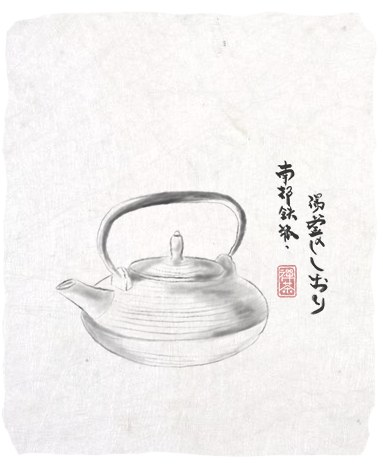
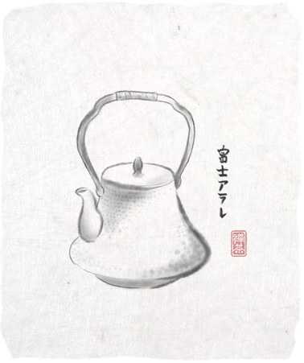
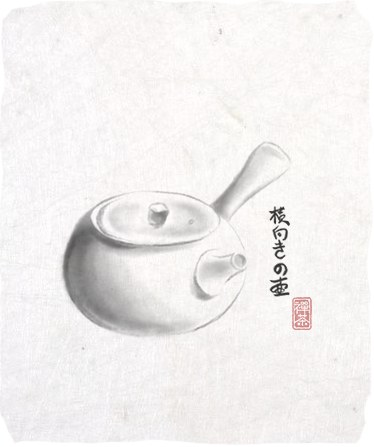
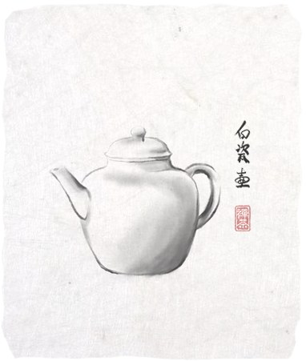
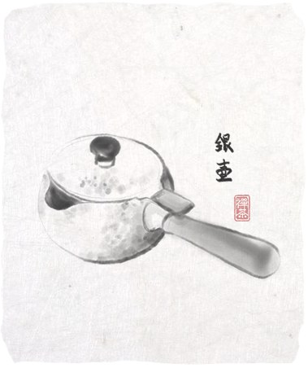
- 玄米茶 (Genmaicha) — Japan · Iron teapot
- ほうじ茶 (Hōjicha) — Japan · Kyusu teapot
- 抹茶 (Matcha) — Japan · ceremonial bowl & whisk
- 鐵觀音 (Tieguanyin) — China · Silver teapot
- 龍井 (Longjing) — China · White Porcelain teapot
Tea Bags
The tea-bag system carries the Zen calligraphic language into every layer — label, bag, individual wrapper, and outer box.
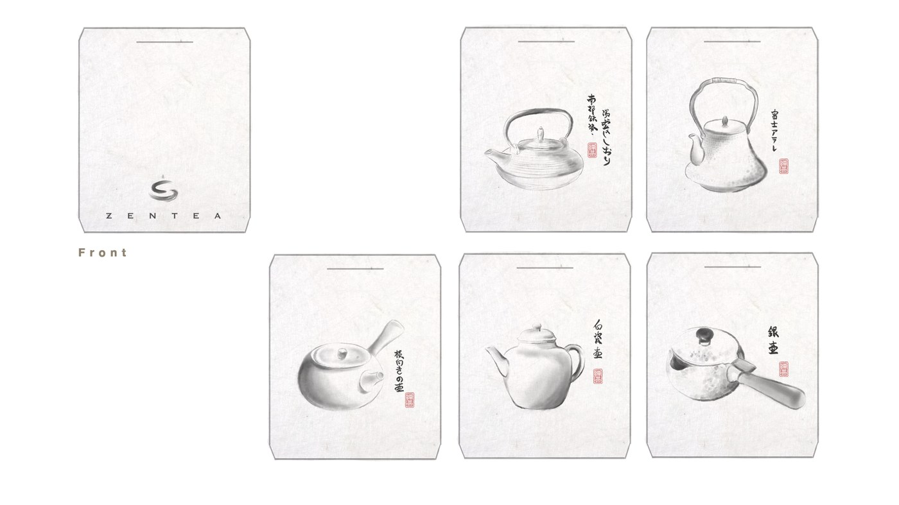
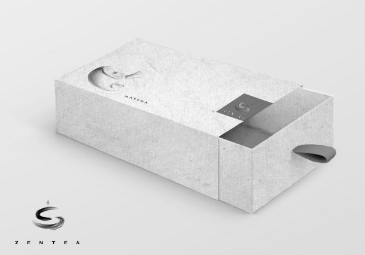
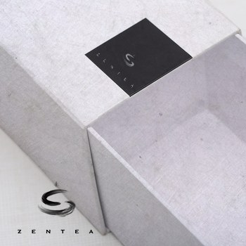
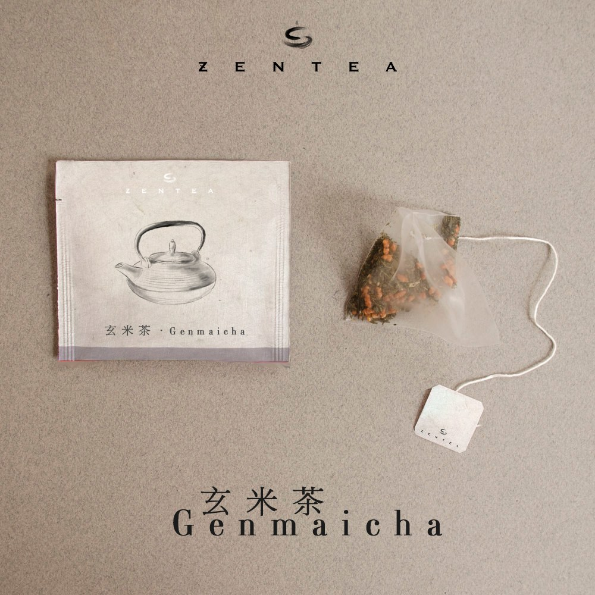
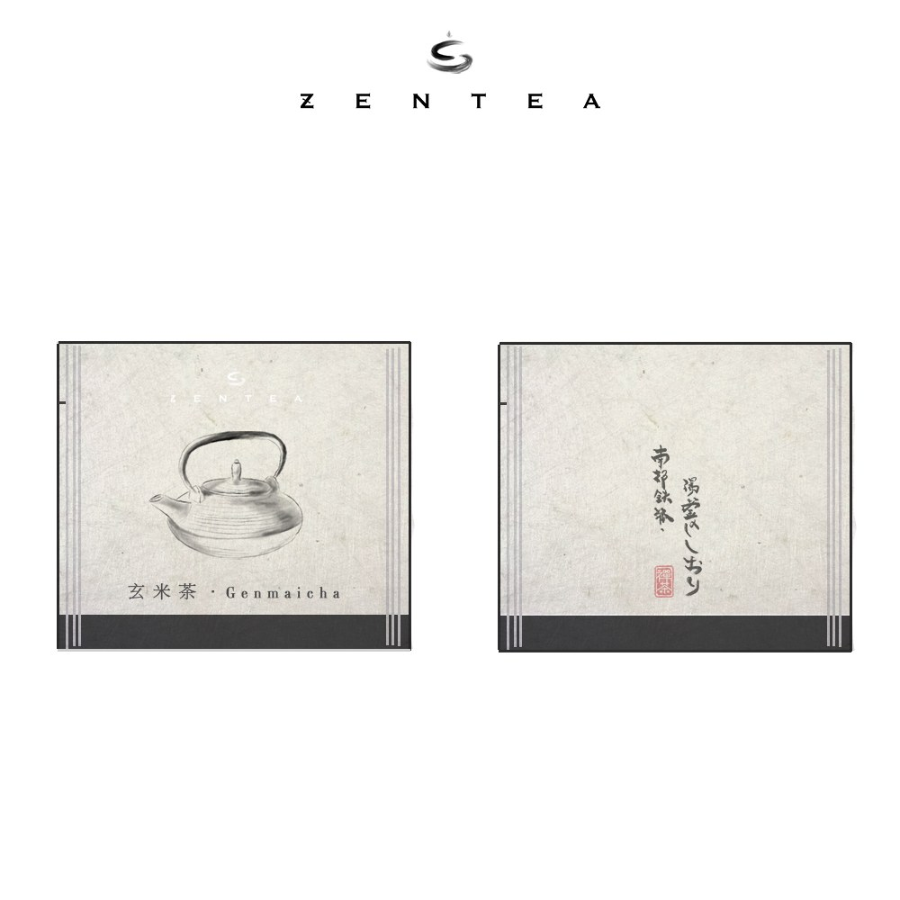
- Label front: illustration of the corresponding tea type. Label back: brand logo.
- Material: unbleached hard paper for the label — texture similar to rice paper, in keeping with the brand's oriental positioning.
- Bag material: translucent paper similar to rice paper.
- Individual wrapper: the front shows the flavor illustration; the back carries the Chinese calligraphy of the flavor name and the brand's Chinese logo.
- Outer box: tea bags ship together in a box of 10.
Loose Leaf
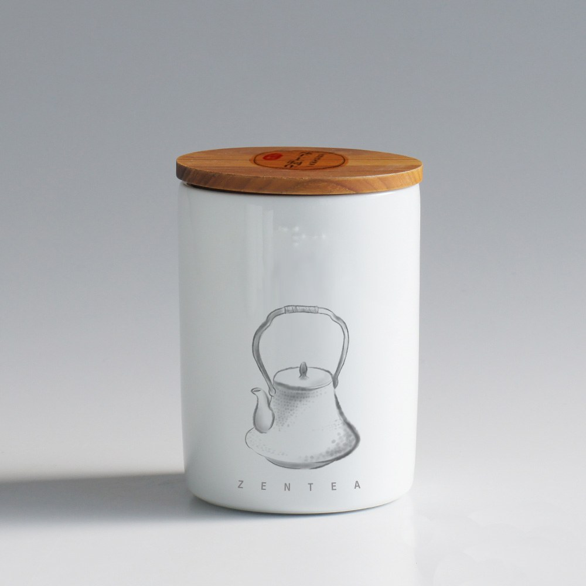
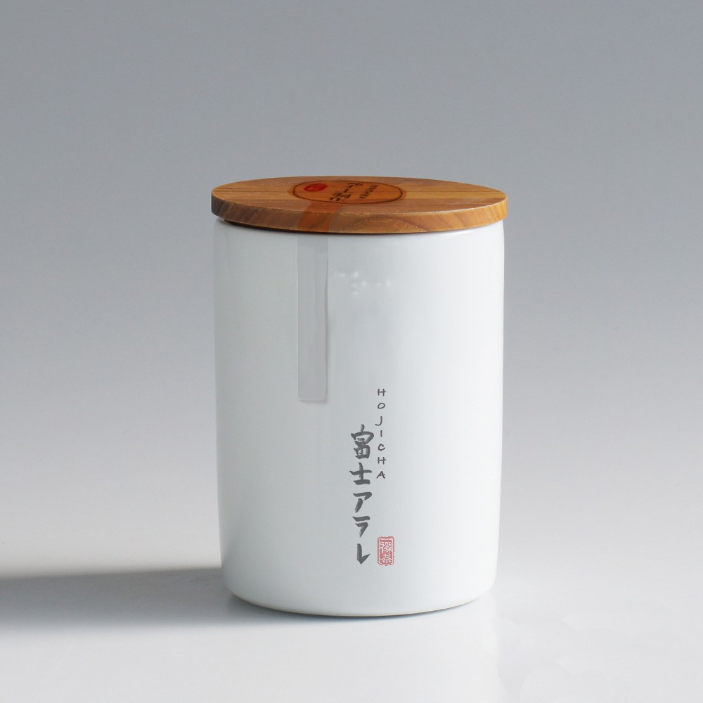
Bamboo lid, white ceramic body, rice-paper seal. The canister is designed to be reused once the tea inside is finished — durable materials supporting the brand's environmental stance.
- Form: cylindrical body — the teapot illustration and English wordmark live on the front; the tea name in its origin language sits on the back.
- Lid: bamboo, sealed with a rice-paper sticker.
- Sustainability: all materials are chosen to be durable and refillable, encouraging consumers to reuse the canister.
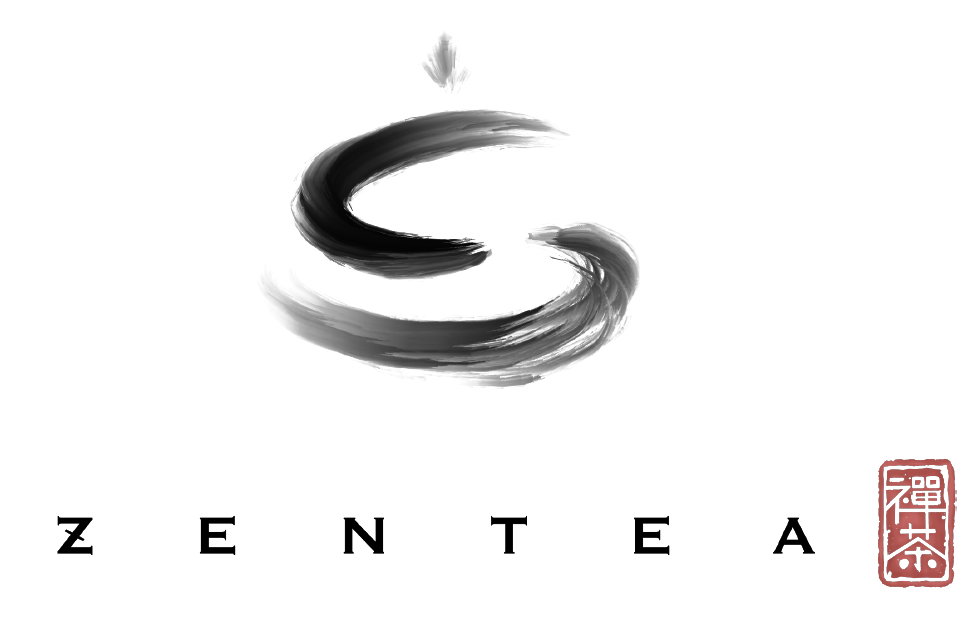